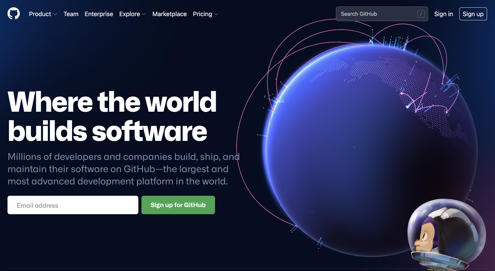
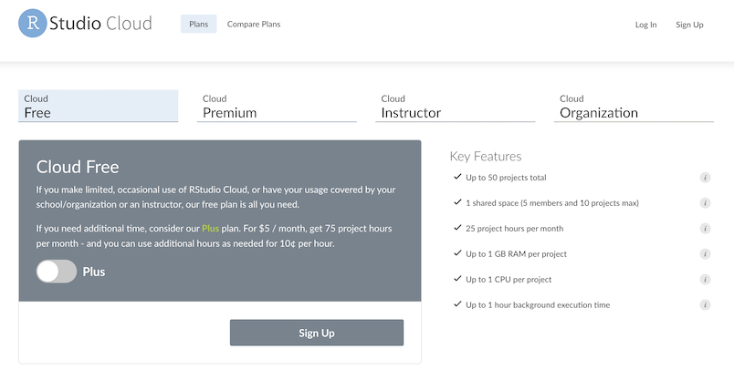
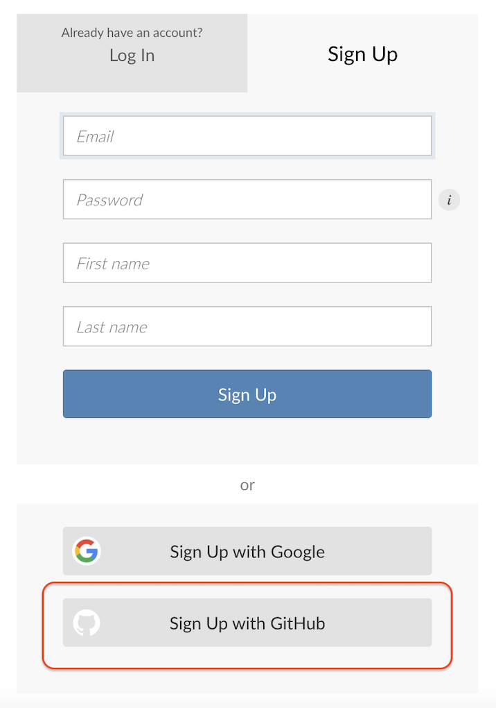

ODSC-ggplot2-west
Welcome to the ggplot2 workshop!
Workshop Materials
The exercises and solutions in the slides are available on RStudio.Cloud at the link below:
We recommend logging in with a GitHub account:
RStudio.Cloud setup
Follow the steps below to get started with GitHub and RStudio.Cloud:
Note
1. Head over to GitHub and set up a free account
2. Create your RStudio.Cloud account (also free!)

3. Use your GitHub credentials to log into RStudio.Cloud
